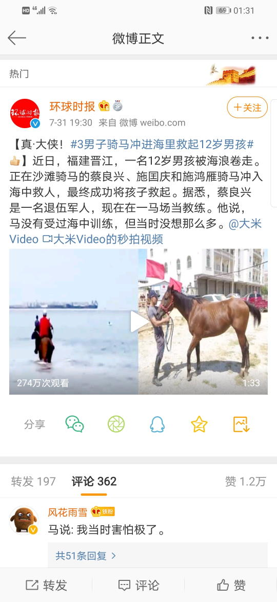

2020-08-01 08:00
睡一觉爬起来，上网乱转发现国际一流和谐宜居之都「高学历精英社交圈」正在首页今日头条位置醒目应景推荐一条火药味十足的重要情报：
1962年10月27日古巴导弹危机爆发，真的是离热核战争下的普遍灭绝，只有几个小时吗？今天是本朝「国防军」（不是「党卫队」）建立纪念日，市面上出现官方和民间的各种武德充沛新闻并不奇怪，而在「莫谈国事只谈风月」的大背景下「古为今用洋为中用」也是稀松平常。
那么先就事论事吧，据「人在美国刚下飞机」的高学历精英嘲笑，古巴导弹危机让赫鲁晓夫的牛皮彻底吹爆了，捞过界还叫嚣要往美国裤裆里塞刺猬，结果面对B-2B-52毫无还手之力。然后「达瓦里希」们就恼羞成怒气急败坏，一边罗列五千万吨当量「大伊凡」各种恐怖数据，一边叫嚣苏修成功试射世界上第一枚洲际导弹并成功发射人造卫星体现了「投送能力」什么的。
再然后「杠精」纷纷出场较真，捋清时间线，说1957年苏修率先装备新型投送能力没错；1959年美帝自己都认为到了1962年可能存在导弹差距，苏修三比一领先，类比一战前英德造舰竞争；于是1960年肯尼迪大肆宣扬苏修威胁成功冻蒜，刚冻蒜就授意辟谣，说美帝洲际导弹领先，导弹差距反而在苏修那里。于是，1961年10月30日，苏共二十二大闭幕前夕，缩水一半的「大伊凡」试爆成功，媒体纷纷「震惊重磅突发号外」，除了略有军事常识认定毫无投送能力的「杠精」之外。
这才是古巴导弹危机的前情提要，苏修怂了是必然。
而古巴导弹危机的后果，还是有身残志坚的民间原子核物理专家谆谆教导人民群众，说即便是「大伊凡」也只能毁灭底特律市中心，郊区都未必，其中计量单位用英制，据称是身康体健的量子物理学家和生物物理学家伉俪于底特律现场测量后提供的。这种不识大体不顾大局不懂政治不讲规矩不守纪律的反动言论就没有遭到「人在美国刚下飞机」的高学历精英狂喷「民科」「杠精」「反社会人格」，奇哉。
好了，回到前一篇的话题。张召忠「把撒谎当饭吃」的岗位职责，连它自己都不否认，粉丝们更是津津乐道。那么金灿荣到底是不是奉旨吹牛呢？毕竟赫鲁晓夫珠玉在前，兲朝主席台前三排如果还要脸，除了牢记不要脱下五十块钱包月的破鞋敲桌子的政治规矩和组织纪律之外，还得牢牢管住自己这张嘴。
这个话题暂且搁置争议，结合《异闻录》继续深化构思。
在正文当中提到了，按照娱乐至死の童年逗哔的话语体系，「模拟经营」类游戏玩家有个操作习惯，就是看着屏幕上风平浪静就心里不痛快，一定要搞出点事来，通常忍耐力在一刻钟以内。所以，人民群众只要发现自己无论干什么，超过一刻钟就会被周边各种突发情况影响，哪怕克服或无视间接影响还会有家贼上门骚扰的直接影响，一定是幕后黑手惹是生非。
估计在市面上各种以十三岁指代三十岁的「未成年人」社会新闻①放风当中，自诩「人类幼崽」的玩家，就是被幕后黑手带在身边「观政」的钦定接班人，没事就进战略值班室体验生活，喝多了把靴子扔到控制台上这种。这帮党国花朵对于「战争」的理解就是「键盘常委鼠标战神」那种，开了透视挂然后打电子游戏，互相之间攀比成风，整天在网上吹嘘自己如何「一只手柄平天下」。
在它们看来，核武库数量质量都是服务器当中的比特，现实中存在不存在无所谓，只要把持媒体就可以吹牛不上税，还可以联络大洋彼岸的「人脉」出动大批反派配角龙套扮红白脸唱双簧，配合自己演一出钦定主角龙傲天开挂升级装哔打脸平砍连击带顺劈一命通关天下布种の新石器时代中国特色社会主义爽文大戏。
所以结论呼之欲出了，成天上门骚扰的家贼所在阵营，才是外强中干色厉内荏的绣花枕头。如果有个愣头青不信邪，放话是骡子是马拉出去遛遛，然后事必躬亲出场迎战，只要在门上踹一脚，就会发现整栋建筑居然应声轰然倒塌。
2020-08-01 09:00
写完上面一段继续上网乱转，发现消息灵通人士正在奔走相告一条色目含量普通的重要情报：
看不见的手
彭博社：
特朗普将命令字节跳动出售抖音海外版TikTok美国业务。
并很快将会宣布此决定。
字节跳动定制版广场协议
抖音都跪得那么卑微了还得挨一顿资本铁拳( ﾟ 3ﾟ)
活该，真以为跪了就能放过你(`ヮ´ )
国内好不容易才出一家可以和脸书推特掰手腕的社交平台就这样被抢走了
(｀･ω･)就看字节跳动怂不怂了，怂了国内的肯定要带节奏。
估计市场占比会被快手抢了去。最差也不过退出市场咯。
不是怂。
之前跟相关员工聊，他说内部不少前期投资的投资机构都在劝卖掉的
毕竟这些投资机构只认钱的，别的都是假的
这次这事Facebook的Zuckerturd也吹了不少风
看自己Facebook玩不过tiktok就鼓动封杀
这事一出，国内想走向国际化的互联网公司就很难了( `д´)
所以再骂一句Zuckerberg面瘫狗屎机器人滚啊
这条情报有耍钱的新浪或曰后浪证实：
01:55:05 据BBG，特朗普准备签署行政命令，勒令字节跳动出售Tiktok美国业务。
02:09:51【微软正谈判收购TikTok美国业务】福克斯商业台在推特上表示，微软正在洽谈收购TikTok在美国的业务。福克斯商业台的Charles Gasparino表示，消息来自投行知情人士，尚未收到TikTok或微软的评论。
06:11:55 道琼斯：微软收购TIKTOK美国业务的交易可能在周一完成。
而南直隶「远东第一体育论坛」的相同情报之下，有消息灵通人士给出理由：
之前一堆天竺推出本土抖音为代表的替代品并大肆下架兲朝哎屁屁的情报，因为不甚重要就没有摘录。
老迈年高的精神病扑街写手不入流码农数学渣认为不重要，但是根红苗正忠君爱国童年才俊尤其是将擅长用大拇指搓手机作为与时俱进标志的后浪似乎不这么认为。这种时候，记忆只有七秒钟并且智商小于等于五的人民群众就忘了之前多年来面对「复制并成功」的指责鹏城「普通家庭」是如何回复的了。
公关策略就是先曰若稽古说德意志民族神圣罗马帝国崛起的时候也狂抄英荷产品并且不给专利费，砥砺奋进几十年之后德国制造就摆脱了粗制滥造形象成为精品象征，再说百善の新世界崛起的时候也在狂抄万恶的旧大陆产品并且不给专利费，砥砺奋进几十年之后美国制造就摆脱了粗制滥造形象成为精品象征，还引经据典称民国时期高级官员对德国药嗤之以鼻并炫耀冰箱里全是美国药。
所以按照「太阳底下没有新鲜事」的原则揣测很正常嘛，科技昌明民智大开的当代与时俱进了这么多年，加上防火长城坚不可摧，兲朝境内互联网自成一体，所有产品对口借鉴。终于境内韭菜割干净了准备出去割外国韭菜，遭到了「以彼之道还施彼身」的待遇……然后开始哀嚎并上纲上线，煽动流氓无产阶级裹胁人民群众勒紧裤腰带无私奉献加入「从龙入关」伟业。
这里还需要咬文嚼字，据称「嵩版入关学」的观点是「入关未必有利，但是不入关就会隔三岔五遭遇犁庭扫穴，同志们跟我来，哪里有压迫哪里就有反抗」，而「曹版入关学」的观点就接地气多了，宣称「入关之后就能住大豪斯骑大洋马，弟兄们给我上，抢钱抢粮抢娘儿们啊啊啊啊」。
2020-08-01 22:30
刚爬起来酒劲还在头昏脑胀，上网乱转发现C站上面挂了一条鲜卑含量甚低而色目含量甚高的重要情报：
【走向我们的小康生活】太原西山：由黑转绿的幸福日子结合繁荣的简体中文互联网上其它舆论判断，可能是「入关学」阵营内讧，「曹版」派系落了下风。
然而总有「杠精」举出反例：
那么什么时候处理学生会许堪祥大人呢，没闹大应该不会了|∀ﾟ
BBC：新疆学生在中国东部求学期间被强迫承认犯罪并多次遭到制裁，据悉与其社交圈言论有关。事发后，数万群众发声对其遭受的处罚表达不满。盎视记者，北京报道。
应该不用解释吧(;´∀`)
你们觉得浙大沙雕，又挨骂，又开除，赔了夫人又折兵。
实际浙大这是给要求保努xx的人一个交代，就算明知道最后保不住，还要多挨骂也要保一下。“你看，事儿我也帮你办了，走真尽力了，现在闹大了确实保不住你也不能怪我了”
在哈族窝子的汉人表示，这个理由可以接受，永远不要以汉族的想法和科学逻辑去推断哈族
跟我之前预想的处理方法差不多。
学校是很难做出二次处罚的决定的，所以如果努某只有这么一次罪行，学校已经做出了处罚的情况下，实际上是不太可能会因为舆论而直接改处罚或者二次处罚的，因为这变相削弱学校内部的独立性，就差明着说“因为大家想你被开除，所以就开除你了”，有点类似司法独立。
所以我个人认为根据新查证的过往劣迹并以此为由，才能合理对原处罚做出修改或者说二次处罚，有点像刑法中的缓刑期间发现漏罪，先并后减数罪并罚。
所以严格来说，你说这是校方迫于舆论压力修改处罚，不完全对，但也不能说没有，只是真正起到作用的是网友提供的过往劣迹的并且经过核实的证据，校方才好借坡下驴
尖锐的问题：这位努尔特·纳扎尔巴耶费斯库努尔特·本·巴特尔不远万里从阿斯塔纳努尔苏丹带着15个克格勃特务持哈萨克斯坦公务护照从外交免检通道大摇大摆入境在之江临安落户领取身份证并抢钱抢粮抢娘儿们，是因为「一带一路」战略去内亚犁庭扫穴了么？
这个问题很难回答，即便是在「国防军建立纪念日」的今天，党国高音喇叭的报道当中也充沛了一片喜气洋洋的和谐景象，军民鱼水一家亲啦，好事做了一火车啦，真是河清海晏歌舞升平的盛世气象，刀枪入库马放南山，禁军变厢军。
那么在「一切修正主义都是纸老虎」的前提下，肃慎和/或色目情报掮客炒作的「入关学」之目标已经明确了，不是山海关，就是嘉峪关。若是结合砥砺奋进七八年来党国高音喇叭反复渲染「离乡游子」东干人在长安狂拍城门长达十二个时辰并叫嚣「我白彦虎又回来了」，没准还是潼关呢。
而在「一切帝国主义都是纸老虎」的前提下，漠北大手情报机构指使岭南精盎情报掮客在举报我的个人博客之余还在到处宣扬的「入关学」，目标是韶关，据称是因为「一带一路」战略去南洋犁庭扫穴了，还有东洋。比方说国际一流和谐宜居之都「高学历精英社交圈」正在首页今日头条位置醒目应景推荐的娱乐至死情报：
为什么很多少数民族说《对马岛之魂》辱华？这种时候，只要出现「杠精」捋清时间线（其中已经有高赞回答干这事了，但是措辞比较委婉），就能弄清历史真相：
- 1273年襄阳陷落
- 1274年忽必烈派遣蒙古脊梁率领棒子附庸攻日 ← 这是《对马岛之魂》游戏的时间点
- 1276年之江临安陷落，学龄前兲子童年才俊孝恭懿圣皇帝投降
- 1279年崖山海战，南宋灭亡
- 1281年忽必烈派遣蒙古脊梁率领之江临安当地新附军出海送死 ← 这是“降级安排，控制使用，就地消化，逐步淘汰”的时间点
那么，对照现实政治和意识形态斗争局势，《港区国安法》刚出台，漠北大手情报机构指使岭南精盎情报掮客正在到处曰若稽古「皇汉穿越崖山海战怎么才能逆天改命？」如是我闻「赵家人投降蒙古也“辱华”，赵家人抵抗蒙古也“辱华”，这“华”到底是个什么东西？」。
当然，还有质问「赵家人到底是个什么东西」的，但是遭遇「政治敏感」理由「亦当删去」。
- ①
 这也太帅了( ﾟ∀ﾟ)b
马：当时我也没想太多
马：还是救人要紧
救人之后会马场路上:
马：要不是看在你面子上，我才不会下水呢(`ε´ )
老哥:嘴上这么说，先迈开步子的还不是你 ﾟ∀ﾟ)σ
马：主人的任务罢了
马游泳能力很棒的，我小时候就知道一句老话
牛游三江，马浮四海(ゝ∀･)
马：我买了战令
马：你们仨……
一个上街随便逮个孩子扔进海里，
一个牵着我摆造型，一个发微博。
我可是什么都没说。